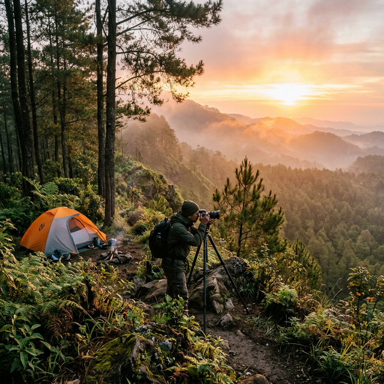
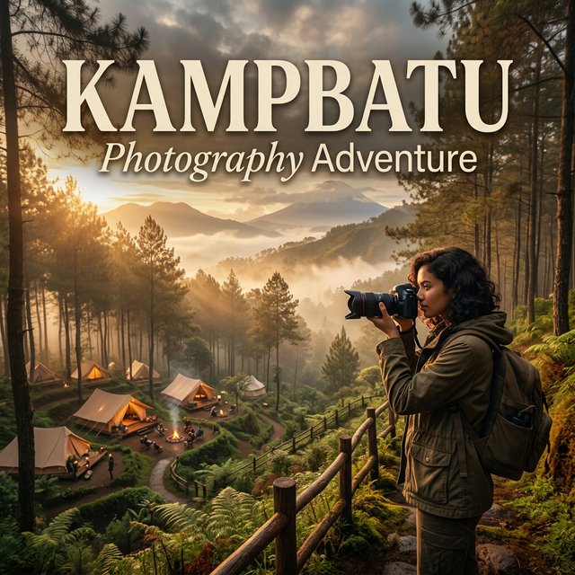

Setiap momen di alam memiliki keindahan yang bersifat sementara — cahaya yang berubah setiap detik, kabut yang menari-nari di antara puncak pohon pinus, dan warna langit yang tak pernah sama dua kali. Fotografi alam saat kemping di Batu Malang adalah tentang menangkap keajaiban-keajaiban fana itu sebelum mereka menghilang selamanya.
1. Mengapa Batu Malang Adalah Surga Fotografi Alam?
Batu Malang menawarkan kombinasi elemen visual yang sangat langka ditemukan dalam satu lokasi: hutan pinus yang rapat dengan batang-batang lurus yang menciptakan leading lines alami, lapisan kabut tipis yang memberikan efek atmospheric perspective, dan ketinggian di atas 1.000 mdpl yang memungkinkan Anda memotret hamparan awan dari atas. Semua elemen ini menjadikan setiap frame yang Anda ambil memiliki kedalaman dan dimensi yang luar biasa.
Berbeda dengan lokasi fotografi populer lainnya yang sudah terlalu ramai dan artifisial, area kemping di Batu Malang masih mempertahankan keasliannya. Anda tidak akan menemukan instalasi foto buatan atau spot selfie yang menghalangi pemandangan alam. Yang ada hanyalah alam dalam bentuknya yang paling murni dan jujur — kanvas sempurna bagi setiap fotografer, dari pemula hingga profesional.
"Fotografi terbaik bukan tentang kamera termahal, melainkan tentang mata yang terlatih melihat keindahan di tempat yang orang lain lewati begitu saja." - Adiel Ebert
1.1 Waktu Terbaik untuk Memotret di Area Kemping
Dalam dunia fotografi alam, ada dua jendela waktu emas yang tidak boleh Anda lewatkan. Pertama adalah golden hour pagi (sekitar 15-30 menit setelah matahari terbit) ketika cahaya hangat keemasan menyapu permukaan hutan dan menciptakan bayangan panjang yang dramatis. Kedua adalah golden hour sore (30-15 menit sebelum matahari terbenam) yang menghasilkan warna langit spektakuler dari oranye hingga merah keunguan.
Di Batu Malang, ada bonus waktu ketiga yang sangat spesial: blue hour (sekitar 20-30 menit sebelum matahari terbit) ketika langit berwarna biru kobalt yang dalam dan kabut masih menutupi lembah di bawah. Momen ini sangat singkat namun menghasilkan foto dengan nuansa ethereal yang hampir tidak mungkin didapatkan di tempat lain.
Perlengkapan Fotografi Esensial:
- Smartphone dengan mode Pro/Manual atau kamera mirrorless untuk kontrol penuh atas eksposur dan white balance.
- Tripod ringan (travel tripod) untuk foto long exposure saat blue hour dan malam hari.
- Kain microfiber untuk membersihkan lensa dari embun pagi yang sering muncul di ketinggian.
- Power bank berkapasitas besar karena baterai kamera lebih cepat habis di suhu dingin.

2. Teknik Komposisi yang Membuat Foto Anda Bercerita
Komposisi adalah jiwa dari sebuah foto. Tanpa komposisi yang baik, bahkan pemandangan terindah pun akan terlihat biasa di layar kamera. Di area kemping Batu Malang, Anda memiliki akses ke berbagai elemen komposisi alami yang tinggal dimanfaatkan. Batang-batang pohon pinus yang lurus adalah leading lines sempurna yang akan menuntun mata pemirsa ke subjek utama foto Anda. Celah di antara pepohonan berfungsi sebagai natural frames yang memberikan kedalaman dan konteks.
Terapkan rule of thirds dengan menempatkan horizon di sepertiga atas atau bawah frame, bukan di tengah. Saat memotret tenda di antara pepohonan, letakkan tenda di salah satu titik pertemuan garis sepertiga untuk menciptakan komposisi yang dinamis dan tidak monoton. Jangan lupa manfaatkan foreground interest seperti dedaunan kering, batu berlumut, atau bunga liar untuk menambah dimensi pada foto landscape Anda.

2.1 Memotret Tenda dan Elemen Kemping
Tenda kemping yang menyala dari dalam di malam hari adalah salah satu subjek fotografi paling ikonik dan paling dicari oleh fotografer outdoor. Untuk mendapatkan efek glowing tent ini, nyalakan lampu di dalam tenda saat senja (bukan gelap total) dan gunakan eksposur yang sedikit lebih lama dari biasanya. Hasil terbaik didapatkan saat langit masih memiliki sisa warna biru tua, menciptakan kontras yang dramatis dengan cahaya hangat dari dalam tenda.
3. Fotografi Malam dan Astrophotography untuk Pemula
Langit malam Batu Malang yang minim polusi cahaya adalah kanvas astrophotography yang luar biasa. Bahkan dengan smartphone flagship terbaru pun, Anda bisa mendapatkan foto Bima Sakti yang memukau jika mengetahui teknik yang tepat. Kuncinya ada pada tiga hal: ISO tinggi (1600-3200), aperture selebar mungkin (f/1.8 atau f/2.8), dan shutter speed yang cukup panjang (15-25 detik untuk menghindari star trailing).
Jika menggunakan smartphone, aktifkan mode malam atau mode Pro dan atur eksposur manual. Letakkan smartphone pada tripod kecil atau sandarkan pada permukaan yang stabil. Gunakan timer 2-5 detik untuk menghindari getaran saat menekan tombol shutter. Dengan sedikit latihan, hasil foto langit malam Anda dari Batu Malang akan membuat teman-teman di media sosial tercengang dan iri.

4. Tips Melindungi Peralatan Kamera di Alam
Alam terbuka adalah musuh terbesar peralatan elektronik. Kelembapan tinggi, embun pagi, debu tanah, dan perubahan suhu drastis antara siang dan malam dapat merusak kamera dan lensa Anda secara permanen jika tidak ditangani dengan benar. Selalu simpan kamera dalam tas kedap air atau dry bag saat tidak digunakan, terutama saat tidur di malam hari ketika embun mulai turun secara deras.
Satu trik yang sering digunakan fotografer profesional di lapangan: letakkan beberapa sachet silica gel di dalam tas kamera untuk menyerap kelembapan berlebih. Ganti silica gel setiap 2-3 hari selama perjalanan kemping untuk efektivitas maksimal. Hindari juga mengganti lensa di area yang berdebu atau saat angin kencang — partikel debu sekecil apapun pada sensor kamera akan muncul sebagai titik gelap yang mengganggu pada foto Anda.
- Rain Cover: Bawa pelindung hujan khusus kamera yang ringkas dan mudah dipasang dalam hitungan detik saat hujan tiba-tiba turun.
- Kain Microfiber: Selalu bawa minimal 2 lembar — satu untuk membersihkan lensa dan satu untuk mengeringkan body kamera dari embun.
- Baterai Cadangan: Bawa minimal 2 baterai cadangan dan simpan di kantong celana dekat tubuh agar tetap hangat — baterai dingin kehilangan kapasitas lebih cepat.
5. FAQ Fotografi Alam Saat Kemping
6. Kesimpulan
Fotografi alam saat kemping di Batu Malang bukan sekadar hobi — ini adalah meditasi visual yang memaksa kita untuk benar-benar hadir di momen ini dan mengapresiasi keindahan yang sering terlewatkan dalam kesibukan sehari-hari. Dengan pemahaman dasar tentang cahaya, komposisi, dan sedikit kesabaran, setiap orang bisa menghasilkan karya foto yang memukau dari perjalanan kemping mereka.
Ingat, foto terbaik bukanlah yang paling tajam atau berwarna paling cerah. Foto terbaik adalah yang mampu membawa perasaan Anda kembali ke momen itu setiap kali melihatnya — udara segar pagi hari, hangatnya api unggun sore, dan keheningan langit malam yang dipenuhi bintang. Itu semua menunggu Anda di Batu Malang.
Adiel Ebert Nakula Shandy
Senior Outdoor Enthusiast & Web Developer. Fotografer alam yang percaya bahwa setiap momen di alam layak diabadikan.